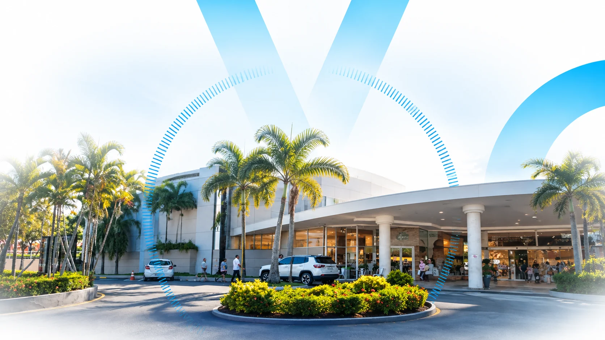
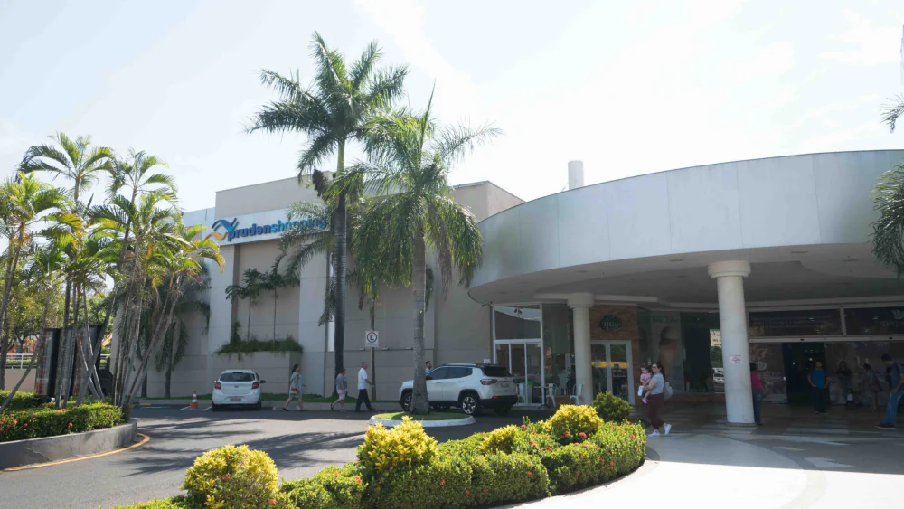
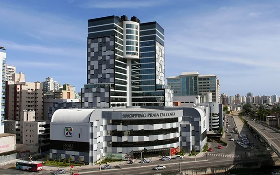
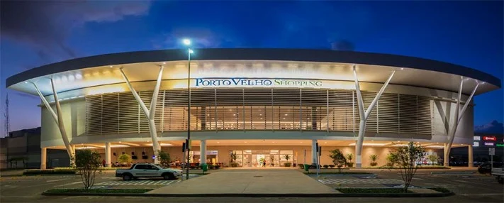

Diversificação -
32 shoppings em 15 estados e no Distrito Federal, operados por 11 administradoras distintas.

O VISC11 é um FII com mais de R$ 3,3 bilhões em patrimônio, que investe em mais de 30 shoppings centers pelo Brasil e repassa o resultado mensal a mais de 344 mil cotistas.
CLIQUE AQUI PARA VER A ANÁLISE COMPLETA DO VISC11115% de retorno desde o início do fundo, contra 69% do IFIX
+344 mil cotistas na B3
32 shoppings em 15 estados e no Distrito Federal
R$ 3,3 bilhões de patrimônio líquido
Leia o regulamento do fundo antes de investir, especialmente os fatores de risco.
O brasileiro gasta em média 10% da sua renda em shoppings centers. O setor faturou R$ 200,9 bilhões em 2025, recorde histórico, e a projeção da Abrasce para 2026 é de R$ 203,7 bilhões, uma média de R$ 25,4 milhões por shopping ao mês. Mesmo com o avanço do e-commerce, os shoppings seguem batendo recordes de faturamento.
Fonte: Abrasce, projeção 2026
O VISC11 é um FII gerido pela Vinci Real Estate Gestora de Recursos Ltda., com administração da BRL Trust DTVM S.A. A tese combina participação em shoppings centers estrategicamente localizados por todo o país, com resultado repassado mensalmente aos cotistas. A carteira é predominantemente minoritária (71% de participação minoritária e 29% de controle), o que diversifica o risco de gestão entre diferentes administradoras.
Fonte: Relatório Gerencial VISC11, Julho/2026
O fundo soma hoje patrimônio líquido de cerca de R$ 3,3 bilhões, com valor patrimonial de aproximadamente R$ 115 por cota. O valor de mercado do fundo gira em torno de R$ 2,96 bilhões, com a cota negociada a cerca de R$ 102 e liquidez diária média de aproximadamente R$ 4,75 milhões.
CLIQUE AQUI PARA VER A ANÁLISE COMPLETA DO VISC11Fonte: Relatório Gerencial VISC11, Julho/2026
Desde o início, o VISC11 acumula rentabilidade bruta total de 115%, contra 69% do IFIX no mesmo período. A rentabilidade líquida total soma 114,6%, equivalente a 116,9% do CDI líquido. R$ 100 mil investidos no VISC11 desde o início viraram cerca de R$ 215 mil, contra aproximadamente R$ 169 mil se aplicados no IFIX.
CLIQUE AQUI PARA VER A ANÁLISE COMPLETA DO VISC11


A carteira reúne 32 shoppings centers em 15 estados e no Distrito Federal, somando 310 mil m² de ABL própria, operados por 11 administradoras distintas. A distribuição geográfica é pulverizada: São Paulo concentra 28% do portfólio, seguido por Rio de Janeiro (10%), Ceará (9%), Minas Gerais (7%), Bahia (7%), Rondônia (7%), Espírito Santo (6%) e Paraná (5%), com o restante distribuído entre as demais regiões do país.
O portfólio soma R$ 4,36 bilhões em imóveis, com R$ 83,6 milhões em caixa e R$ 1,025 bilhão em obrigações líquidas.
CLIQUE AQUI PARA VER A ANÁLISE COMPLETA DO VISC11A carteira do VISC11 é operada por 11 administradoras distintas, entre elas Ancar (30% do NOI), Multiplan (18%), Argo (11%), Allos (9%) e Alqia (9%), o que diversifica o risco de gestão entre diferentes operadores especializados.
Entre os ativos que mais geram resultado para o fundo estão o Prudenshopping (11% do NOI), o Shopping Praia da Costa (7%), o Porto Velho Shopping (7%), o Campinas Shopping (6%), o Shopping Paralela (6%) e o BH Shopping (5%).
Fonte: Relatório Gerencial VISC11, Julho/2026
CLIQUE AQUI PARA VER A ANÁLISE COMPLETA DO VISC11a gestora seleciona participações em shoppings centers estrategicamente localizados por todo o país.
cada shopping é administrado por operadoras especializadas do setor, como Ancar, Multiplan, Argo, Allos e Alqia.
as vendas, o fluxo de veículos e a ocupação das lojas geram o resultado operacional de cada shopping.
o resultado apurado é repassado mensalmente aos cotistas, com isenção de Imposto de Renda para pessoa física que atenda aos requisitos legais.
32 shoppings em 15 estados e no Distrito Federal, operados por 11 administradoras distintas.
faturamento recorde de R$ 200,9 bilhões em 2025, mesmo com o avanço do e-commerce.
NOI caixa por m² cresceu 8,4% e vendas por m² cresceram 8,5% em um ano.
taxa de inadimplência líquida de apenas 2,2%, com ocupação de 94,1%.
rentabilidade bruta de 115% desde o início, acima dos 69% do IFIX no período.
volume médio diário de R$ 4,75 milhões e mais de 344 mil cotistas.
Relatório de 21 de setembro de 2026 que analisa o portfólio, os resultados, a liquidez e a estrutura de capital do fundo, e explica o que está por trás do desconto da cota em relação ao valor patrimonial.
Fonte: Eleven Financial Research, Análise VISC11, 21/09/2026. A Eleven Financial é uma marca da Suno S.A.
FII gerido pela Vinci Real Estate Gestora de Recursos Ltda. que investe em participações em shoppings centers por todo o Brasil, buscando resultado recorrente e repassando-o mensalmente aos cotistas.
Para pessoa física, os rendimentos distribuídos por fundos imobiliários negociados em bolsa contam com isenção de Imposto de Renda, desde que atendidos os requisitos legais (Lei 9.779/99), como o investidor deter menos de 10% das cotas do fundo e o fundo contar com mais de 50 cotistas.
Sim. São negociadas diariamente na B3 sob o código VISC11, com liquidez diária média de R$ 4,75 milhões e mais de 344 mil cotistas.
Moderado, com carteira diversificada entre 32 shoppings, 15 estados e o Distrito Federal, operados por 11 administradoras distintas, com inadimplência líquida de 2,2% e taxa de ocupação de 94,1% em julho de 2026.